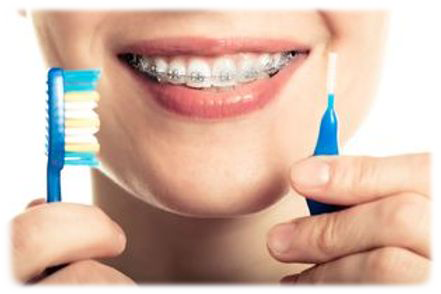

Cómo cepillarse los dientes con brackets

La limpieza de brackets debe ser minuciosa para evitar que la placa bacteriana quede atrapada dentro y a su alrededor. El siguiente método facilita y simplifica el cepillado y el uso de hilo dental diario.
- Prepárate para cepillarte. Retira las gomas y demás partes móviles del aparato.
- Limpia los brackets. Sujeta el cepillo en un ángulo de 45 grados para limpiar alrededor del alambre y los ganchos de los brackets. Cepilla desde la parte superior de los alambres hacia la inferior. Asegúrate de que has eliminado toda la placa e impurezas, y de que has recorrido todas las zonas de la parte inferior y superior.
- Cepíllate los dientes. Lava cada diente de forma individual. Primero, sitúa el mango en un ángulo de 45 grados con respecto a la línea de las encías; a continuación, presiona suavemente mientras describes un movimiento circular. Hazlo durante 10 segundos. Realiza el mismo movimiento por las superficies interna y externa de los dientes inclinando el cepillo para llegar mejor a la parte interior de los dientes frontales más pequeños.
- Utiliza seda dental una vez al día. Pídele al dentista que te enseñe a utilizarla correctamente o sigue las instrucciones del envase del producto. Quizás te interese probar un producto de limpieza con hilo dental específico para ortodoncias y tareas ortodónticas, como el enhebrador de hilo dental.
- Enjuágate y revisa tus dientes. Enjuágate bien con agua o enjuague bucal y examina tus dientes y la ortodoncia en el espejo.